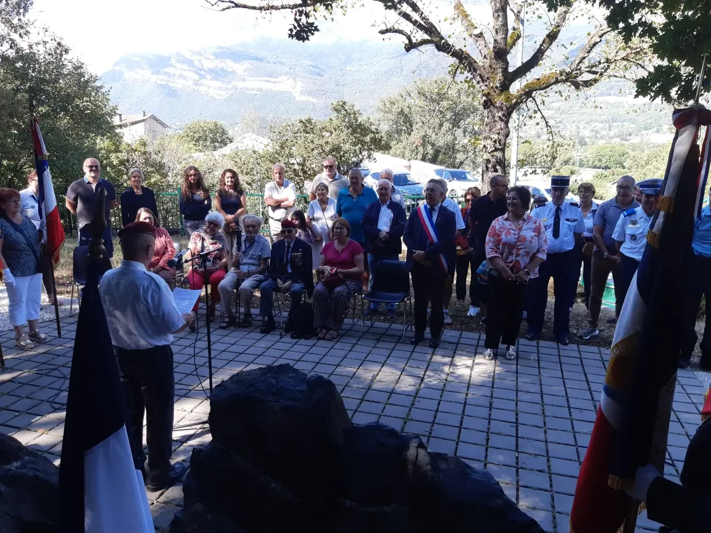
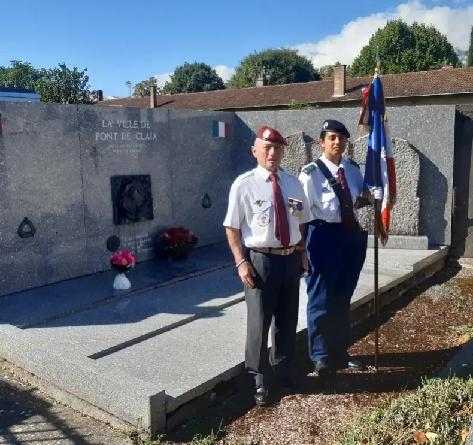
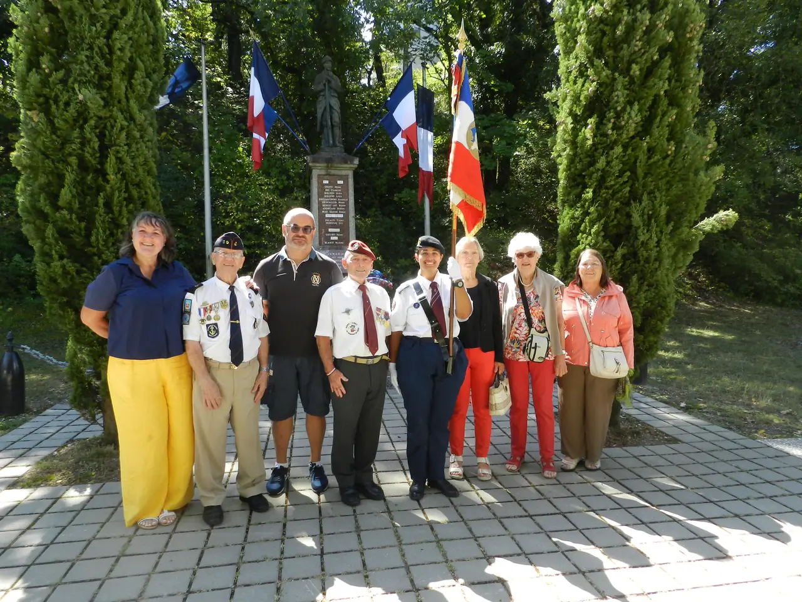
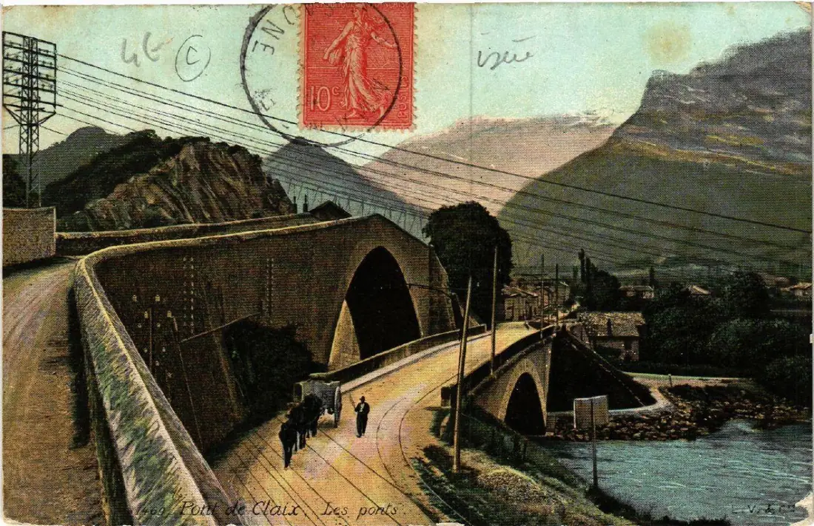

Photothèque
Galerie
Albums des rassemblements, des cérémonies et des archives confiées par les anciens. Les photographies sont publiées avec le nom de celui qui les a confiées.

Album · 136 photos
Assemblée générale 2026 à Collioure
15 et 16 octobre : assemblée, balade en mer vers le cap Béar, soirée de gala, cérémonie au monument aux morts et déjeuner à l'Ermitage.
Voir l'albumoctobre 2026

octobre 2026

octobre 2026

octobre 2026

22 août 2026

22 août 2026

22 août 2026

début XXe
Cette galerie ne demande qu'à grandir. Si vous détenez des photographies de promotions, de stages ou de cérémonies — les vôtres ou celles d'un camarade disparu — confiez-les à la commission mémoire : nous les numérisons, nous vous rendons les originaux, et chaque image publiée porte votre nom. Nous écrire.